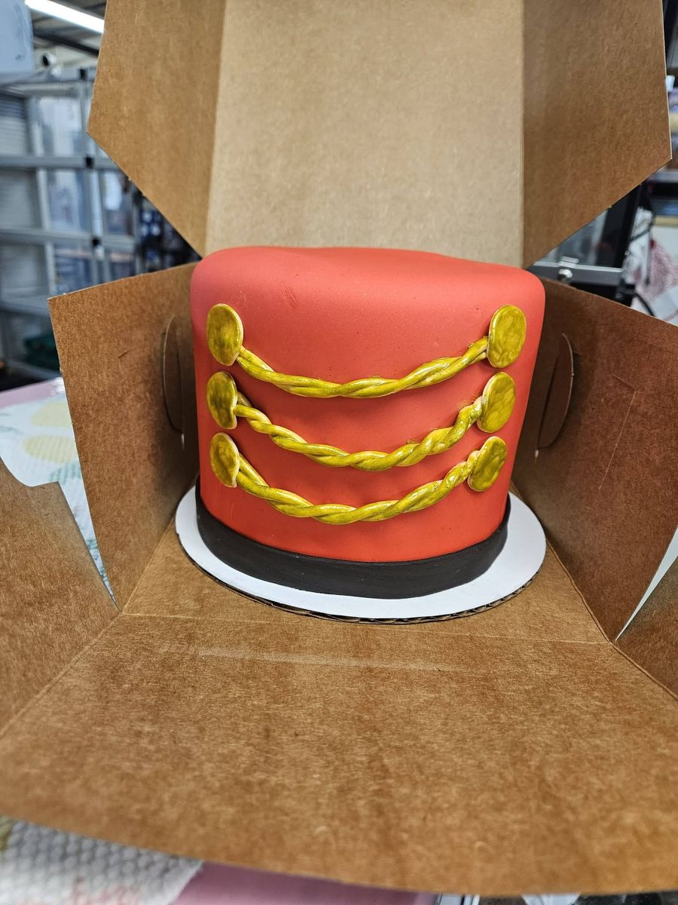
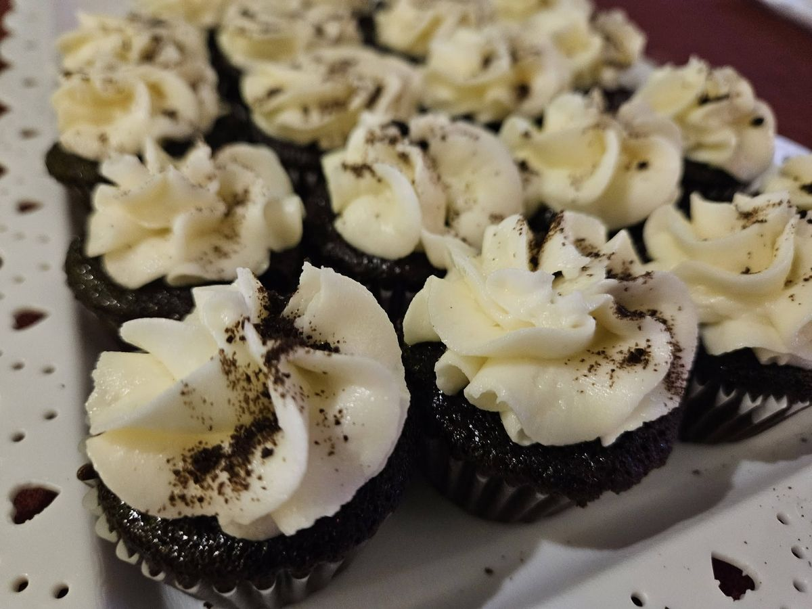
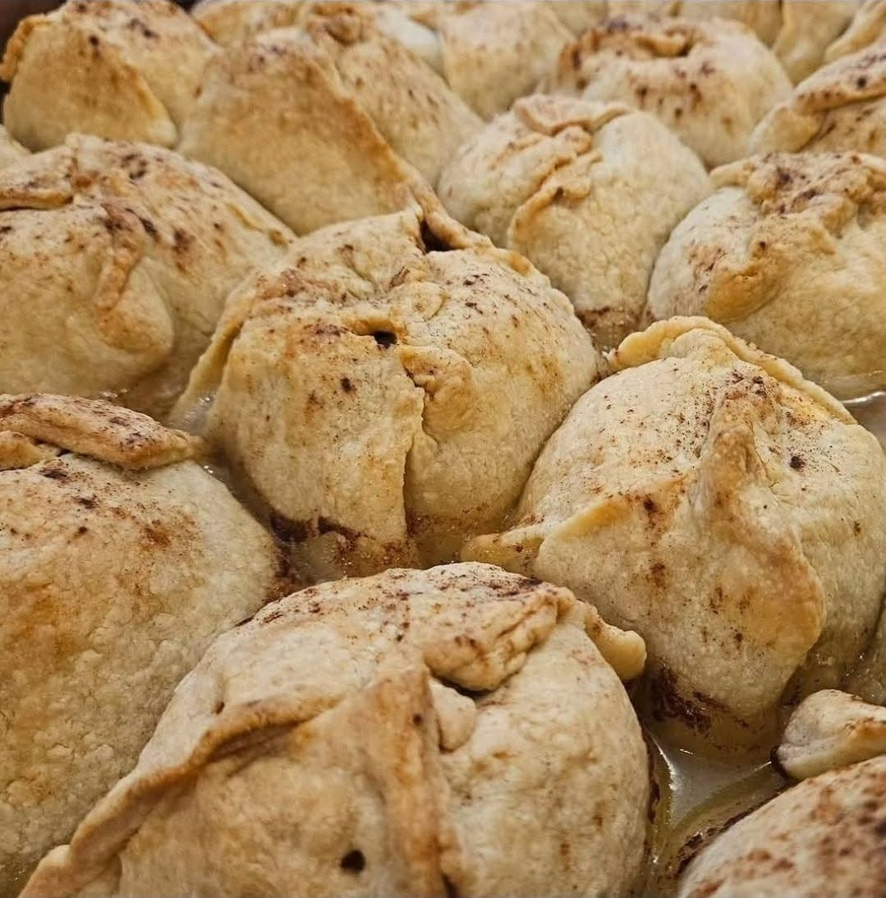
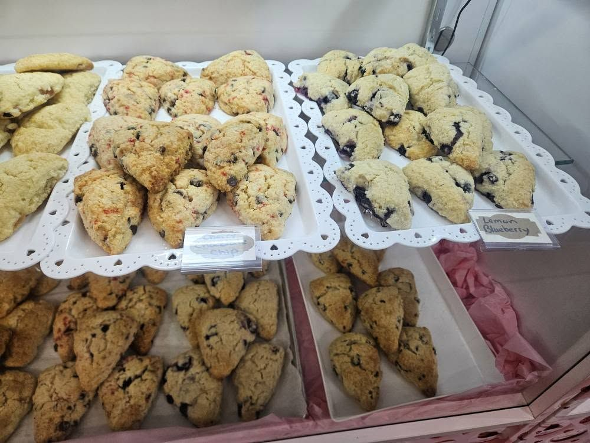

100+ flavors
A huge flavor selection so you can find exactly what your guests will love.
10 S Summit Ave, Shillington, PA 19607.
Open Thu & Fri 10 AM – 4 PM · Sat 10 AM – 2 PM
Over 100 flavors, baking since 2012. Hours change with the seasons, so check our Facebook for this week's updates.
Delightful and elegant desserts for every celebration, including party specialties, with over 100 flavors to choose from.
On a typical market day you'll find scones, cupcakes, cookies, brownies and weekly seasonal specials. Flavors rotate, and there are over 100 of them. We post each week's specials on Facebook. Party or birthday order? Ask us at the stand or call (484) 219-0445.




Birthdays, showers, holidays, or “just because” — call, email, or message us on Facebook with your date and ideas. We’ll reply with options.
We’re a bakery at Shillington Farmers Market, baking since 2012 and focused on party dessert specialties, custom cakes, and flavors that make every event feel special.
A huge flavor selection so you can find exactly what your guests will love.
Experienced with dessert tables, trays, and celebration cakes for any occasion.
Find us at Shillington Farmers Market in Shillington, PA.